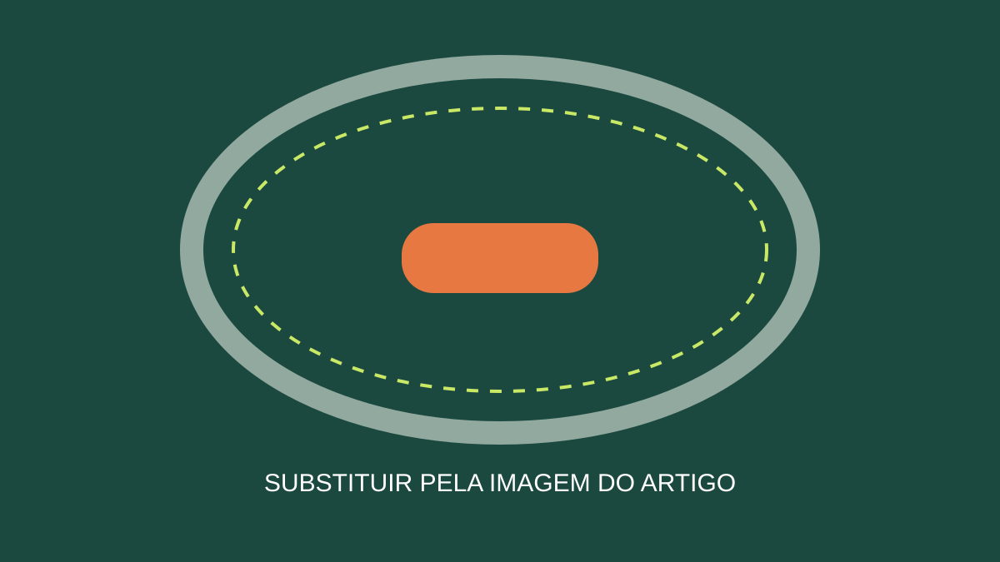

[INTRODUÇÃO: contexto, necessidade do leitor e resposta em linguagem direta.]
[SEÇÃO 1]
[Desenvolva uma ideia por seção. Explique termos técnicos e cite fontes quando necessário.]
[SEÇÃO 2]
[Acrescente detalhes específicos, passos ou exemplos pertinentes ao tema.]
Conclusão
[Retome os aprendizados e ofereça um próximo passo útil, sem chamada enganosa.]
Sobre o autor: [BIO CURTA VERIFICADA OU REMOVER ESTA LINHA]
Fontes e referências
- [FONTE PRIMÁRIA, FABRICANTE OU REFERÊNCIA CONSULTADA]